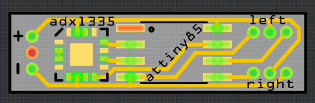

Miniaturization¶
Published on 2016-02-21 in Mechatronic Ears.
So I’ve been thinking… If I were to do it seriously, I would probably drop the Pro Mini and use an ATtiny85 instead, with a custom, small PCB to contain the whole thing. It would be small enough to actually fit on the band holding the ears, something like this:

That’s 23×6.5mm, and could be made even smaller if I populated both sides… Then of course the battery would need to go into one of the ears, and there also needs to be a power switch…\